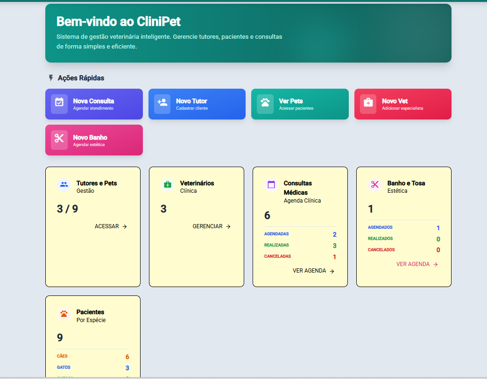
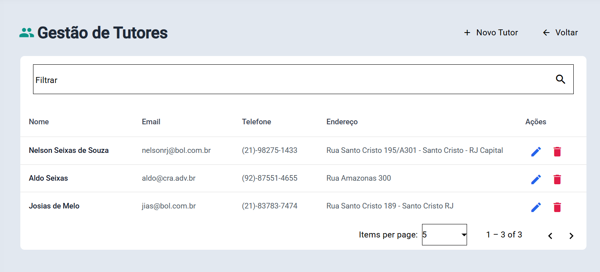
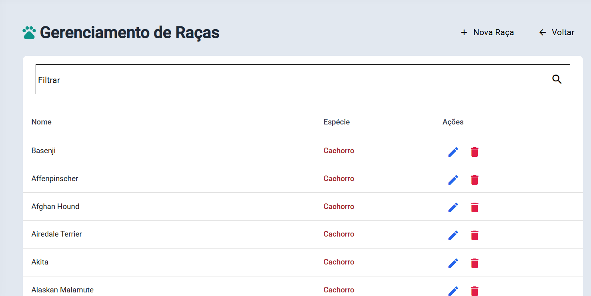
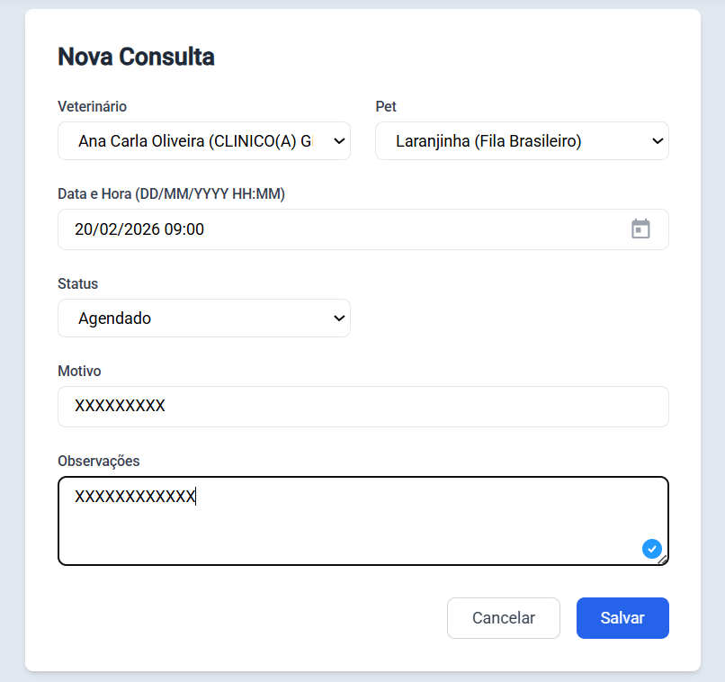
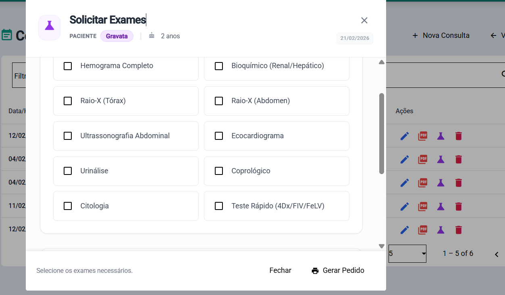

Para acessar o CliniPet, você deve possuir um usuário e senha cadastrados.
Abra o navegador e digite o endereço do sistema.
Na tela de login, insira seu E-mail e Senha.
Clique no botão Entrar.
Nota: Caso tenha esquecido sua senha, solicite a redefinição ao administrador do sistema.
2. Painel de Controle (Dashboard)
Ao entrar no sistema, você será direcionado para o Painel de Controle. Esta tela oferece uma visão geral da clínica.
Ações Rápidas
Botões de acesso direto para as tarefas mais comuns:
event_availableNova Consulta: Inicia o agendamento de um atendimento.
person_addNovo Tutor: Abre o formulário para cadastro de um cliente.
petsVer Pets: Lista todos os animais cadastrados.
medical_servicesNovo Veterinário: Cadastro de novos profissionais da equipe.
Resumo (Cards Superiores)
Você visualizará cartões com números atualizados sobre:
peopleTutores e Pets: Total de clientes e pacientes cadastrados.
medical_servicesVeterinários: Número de profissionais ativos.
calendar_todayConsultas: Total de agendamentos registrados no sistema (Agendadas, Realizadas, Canceladas).
content_cutBanho e Tosa: Total de agendamentos de estética (Agendados, Realizados, Cancelados).
petsPacientes por Espécie: Total de pacientes com detalhamento por tipo (Cães, Gatos, Outros).
Nota: Os números nos cartões de Consultas, Banho e Tosa e Espécies possuem cores indicativas:
Azul: Agendados / Gatos
Verde: Realizados / Outros
Vermelho: Cancelados
Laranja: Cães

dashboardPara exibir a captura desta tela aqui, salve a imagem em: public/assets/manual/dashboard.png'" />
3. Gestão de Cadastros
O menu lateral esquerdo permite navegar entre os diferentes módulos do sistema.
3.1 Veterinários
Gerencie a equipe médica da clínica.
Listagem: Visualize todos os veterinários, suas especialidades e status.
Novo Cadastro: Clique em "Novo Veterinário" para adicionar um profissional. É necessário informar Nome Completo, CRMV, Especialidade e E-mail.
Edição: Clique no ícone de lápis ao lado de um veterinário para alterar seus dados.
3.2 Tutores (Proprietários)
Cadastro dos clientes da clínica.
Listagem: Busque por nome, CPF ou telefone.
Novo Cadastro: Clique em "Novo Tutor". Preencha os dados pessoais (Nome, CPF, Telefone, Endereço).
Pets do Tutor: Ao visualizar os detalhes de um tutor, você pode ver e gerenciar os pets associados a ele.

peoplePara exibir a captura desta tela aqui, salve a imagem em: public/assets/manual/tutores.png'" />
3.3 Pets (Pacientes)
Gestão dos animais atendidos.
Listagem: Visualize a lista geral de pacientes. Use os filtros para encontrar um pet específico.
Cadastro: O cadastro de um pet geralmente é feito vinculado a um Tutor, mas pode ser iniciado também pelo menu de Pets (selecionando o tutor responsável).
Dados do Pet: É importante registrar Nome, Espécie (Cão/Gato), Raça, Idade, Peso e Sexo corretamente para o histórico clínico.
3.4 Raças
Gerenciamento das raças disponíveis para cadastro de pets.
Listagem e Busca: A tela inicial de raças exibe a lista completa com barra de busca para localizar por nome da raça. A lista conta com paginação e ordenação clicando no cabeçalho.
Novo Cadastro: O sistema já vem com uma lista pré-definida, mas você pode adicionar novas raças rapidamente através do botão "Nova Raça" na listagem.
Edição e Exclusão: Utilize os ícones de ação (lápis e lixeira) disponibilizados ao lado de cada raça na listagem para edição ou exclusão direta.

categoryPara exibir a captura desta tela aqui, salve a imagem em: public/assets/manual/racas.png'" />
4. Gestão Clínica
4.1 Agendamento de Consultas
Para marcar uma nova consulta:
Acesse o menu Consultas ou clique em Nova Consulta no Dashboard.
Preencha o formulário:
Veterinário: Selecione o profissional responsável.
Pet: Escolha o paciente.
Data e Hora: Informe quando será o atendimento.
Status: Defina como "Agendado".
Motivo: Descreva brevemente a razão da visita.
Clique em Salvar.

event_notePara exibir a captura desta tela aqui, salve a imagem em: public/assets/manual/agendamento.png'" />
4.2 Realização de Atendimentos
Para registrar o atendimento clínico:
Vá até a listagem de Consultas.
Localize o agendamento do paciente.
Você pode alterar o Status para "Realizado" ao finalizar.
Utilize as ações na linha da consulta para procedimentos clínicos (Exames e Prescrições).
4.3 Prescrições e Exames
Na lista de consultas, você encontrará ícones de ação para cada atendimento:
Prescrição (Receituário):
Clique no ícone de Prescrição.
Uma janela se abrirá com o histórico de receitas do paciente.
Para uma nova receita, adicione os medicamentos, doses e instruções.
Salve e, se necessário, imprima o documento para o tutor.
Exames:
Clique no ícone de Exames.
Você poderá visualizar exames anteriores ou solicitar novos.
Registre os detalhes da solicitação ou os resultados.

medicationPara exibir a captura desta tela aqui, salve a imagem em: public/assets/manual/prescricoes.png'" />
Dúvidas ou Suporte?
Entre em contato com a administração do sistema para reportar erros ou solicitar novos acessos.